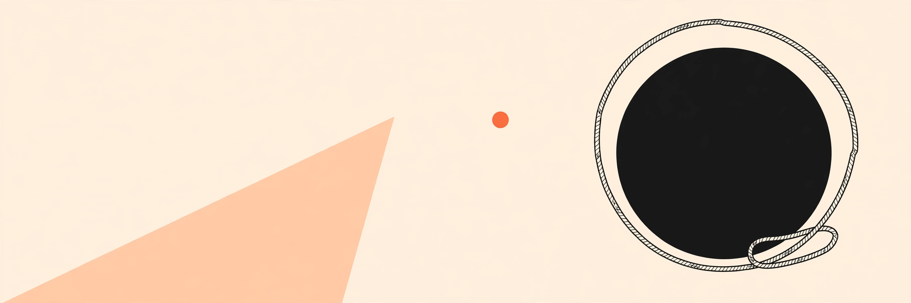
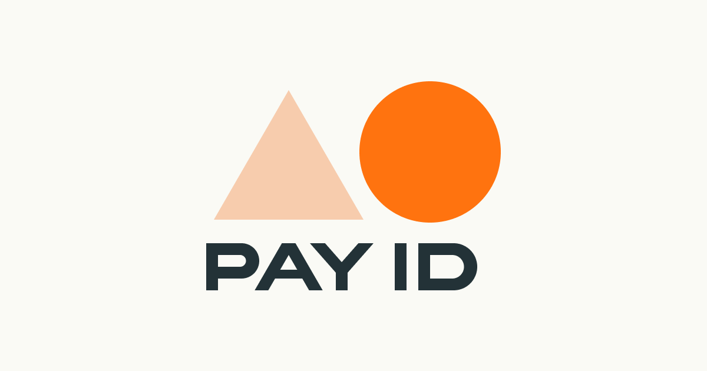
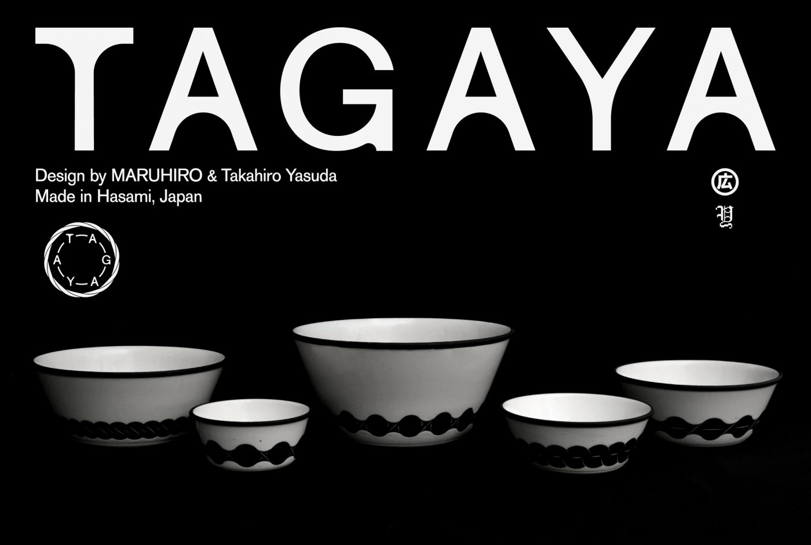
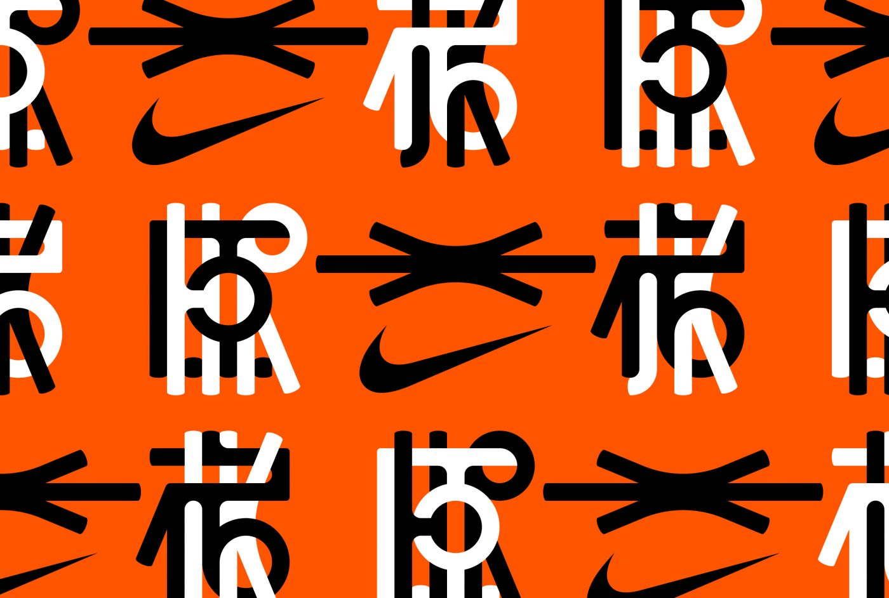
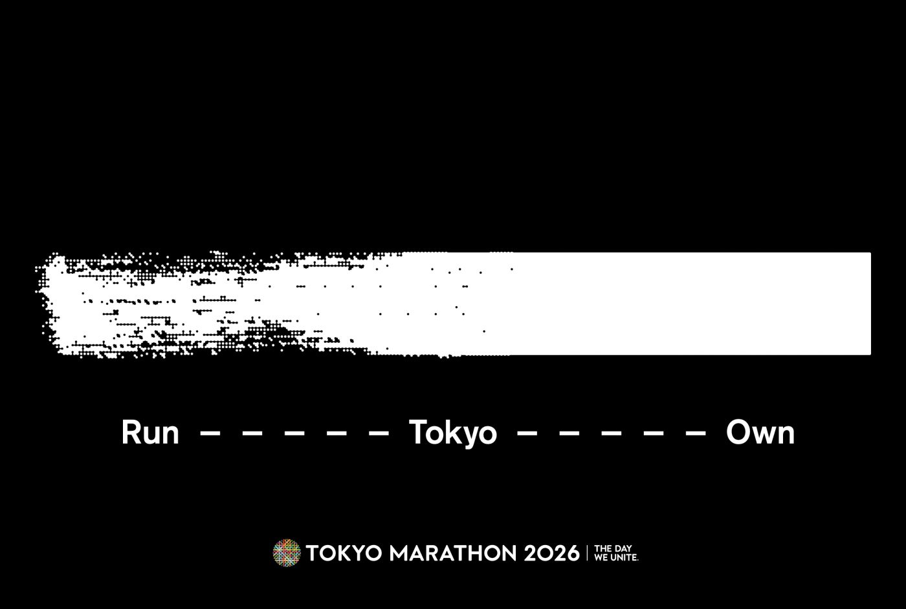
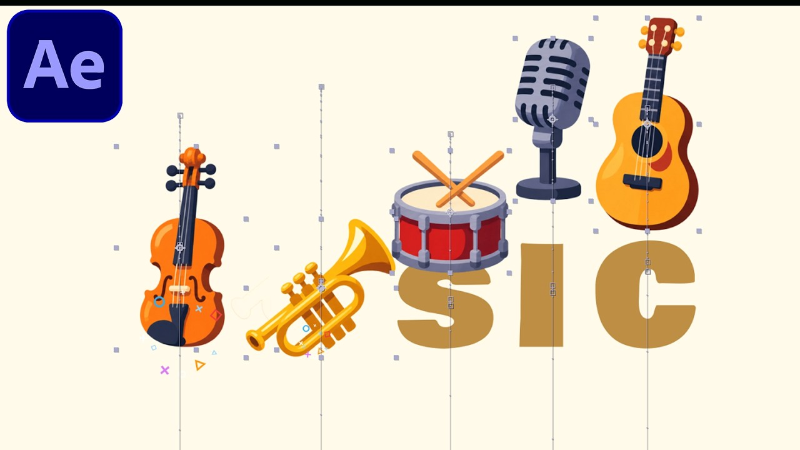
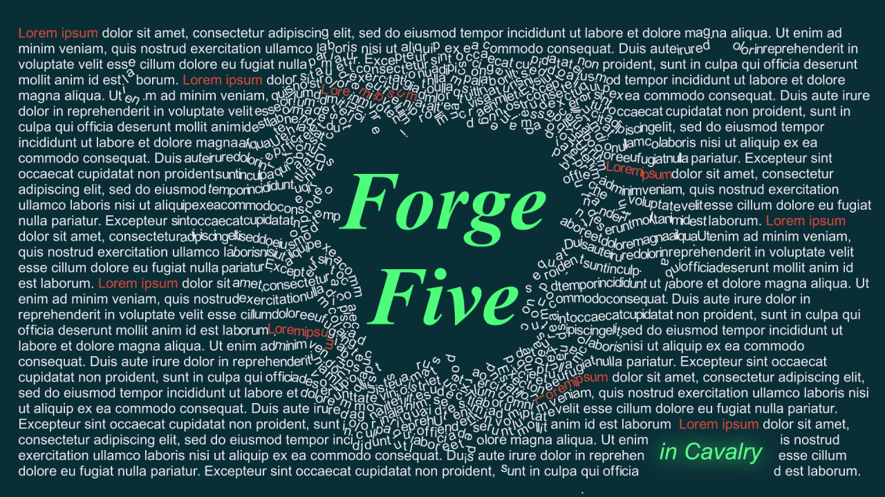

ニュース
今日のハイライト
- トップはフランスの慈善団体による「分断」を描くCG広告『The Divide』。AIを使わず手作りの質感で作られた、ストップモーション風の社会派スポット。
- 広告＋モーション系は5本で約7割。Unreal Engine 5で作られたCGキャラ広告、Etsyのモーションアイデンティティ、手作りストップモーションのクリスマスシリーズと、作り方が三者三様。
- その他はバスキアの公認ドキュメンタリーと、InterBEE閉幕直後のDJIブースレポート。新着の広告・モーションが薄めの日だったため、11月前半の秀作2本を「今週の注目」として加えている。
1. フランス社会の「分断」に亀裂を走らせる、ストップモーション風CG広告
フランスの慈善団体レス・レスト・デュ・クール（Les Restos du Cœur）の新作「The Divide」。貧困の中で「自由・平等・友愛」を選ぶ自由は本当にあるのか、という問いを、フランスを横断する巨大な亀裂のイメージで描く。Mathematicが3Dアニメーションに手作りのストップモーション風テクスチャを重ね、AIを使わずに質感を作り込んだ点が注目。最後に実写へ切り替わる構成も含め、社会派広告の造形の好例。
2. ノミが一家に居座る、Unreal Engine 5製のCGキャラ広告
Elancoのノミ駆除薬Advantageのキャンペーン「Captain Itch」。SuperBlimpが、毛むくじゃらのノミのキャラクター「キャプテン・イッチ」を主役に据えたキャラクター主導のCMを、Unreal Engine 5で最初から最後まで制作。グルーミングやライティングまでリアルタイムパイプラインで放送品質に仕上げた技術面と、「脅威→衝突→反撃」の3ビートで組み立てた演出が、CG広告の作り手の参考になる。
3. Etsyの「動き」を言語化する、Vuckoのモーションアイデンティティ
トロントのモーションスタジオVuckoが手がけたEtsyのモーションアイデンティティ。プロダクトとマーケティングでバラバラだった動きを、「喜び・シンプルさ・クラフト」という3つの価値観と、「Blooming／Responsive／Dimension」の3つの動作パターンに整理し、全部署で共有できる1つの言語にまとめた。ロゴを動かすのではなく「ブランドのふるまい」を設計するという、モーションシステム思考の好例。
4. 北極の修理工たちがクリスマスを救う、手作りストップモーション3部作
米Midasのクリスマスキャンペーン「A Very Merry Midas Holiday」。マーモット、イエティ、セイウチ、くるみ割り人形の整備士たちが、北極のミニチュアガレージでクリスマスを動かし続ける——手作りのキャラクターとセットをコマ撮りした3部作シリーズ。デジタル全盛の今、あえて物理的な造形の手触りを前面に出す広告の作り方が光る。12月にかけて順次公開。
5. 缶1本の捨て方が「良心の危機」に、アイルランドの返却キャンペーン
アイルランドのデポジット返却制度Re-turnとBoys+Girlsによる「Re-turn It Right」第3弾。缶をゴミ箱に捨てた男に罪悪感が襲いかかる、ユーモラスな短編フィルム。雨の夜の決断という小さなドラマで「毎回、正しく返す」という行動変容を促す。説教せずに笑わせながら制度を浸透させる、社会派広告の演出の好例。
6. バスキアの素顔を家族が語る、初の公認ドキュメンタリー
Netflixで12月11日に世界配信されるドキュメンタリー『Jean-Michel Basquiat』。遺産を管理する2人の妹が初めて公式に認めた作品で、未公開の作品や家族のアーカイブ、親しい人々の証言から「神話の向こう側の人物」を描く。トライベッカ映画祭でドキュメンタリー編集賞を受賞。アーティストの肖像をどう編むか、作り手目線でも学びの多い一本。
7. DJI、InterBEEに初出展——Roninからドローンまで体験型ブース
InterBEE 2026（11月18〜20日、幕張メッセ）のDJIブースレポート。日本国内代理店経由ではなく自社出展に切り替え、会場最大級のブースでRoninの実機デモ（ポルシェに載せたカメラをMaster Wheelsで操作）やOsmoシリーズ、Mavic 4 Proなどのドローンを展示。機材の性能だけでなく「触って試せる体験」として見せる展示の作り方が、現場の作り手に直結する。InterBEEは11月20日に閉幕。
特集 ― デザイン特集マガジン・第6号

全部、ビジュアルだ
――安田昂弘と「境界を越える」グラフィック
ロゴ、器、店舗の看板、マラソンのメインビジュアル、ミュージックビデオ。安田昂弘（1985年生まれ）の仕事を並べると、媒体がバラバラに見える。だが本人に言わせれば、全部同じことだ。「僕にとって『デザイン』は『ビジュアル』なんです。最終的には人が目で見るものなので、平面にしろ、プロダクトにしろ、グラフィックにしろ、映像にしろ、すべてが『ビジュアル』」。2010年に多摩美術大学グラフィックデザイン学科を卒業し、ドラフトを経て2015年に独立。CEKAIのアートディレクターとしてファミリーマート、NIKE、Google、NHKなどを手がける一方で、2015年から毎年欠かさず個展を開いている。2026年5月のPAY ID新ロゴ、2025年11月の器シリーズ《TAGAYA》、2025年9月のNIKE原宿ストアロゴ――直近1年の3つの仕事から、「境界を越える」グラフィックの技法を解剖する。
勉強ポイント
- 形を決める前に「文章」を書く。 安田はロゴの仕事で、まず長めのテキストを書く。サービスが何を大切にしているかを言葉にして共有し、思想と方向性を揃えてから形に入る。初回の提案がテキストだけで、デザインが一切ないこともある。映像の企画でも「何を伝えたいか」を文章化してから絵コンテを切る順序が効く。
- ロゴは「説明」しない。「瞬発的に覚えられる形」を目指す。 意味をにじませるのは最小限でいい。プロセスは複雑でも、最終形はすっと頭に入る単純さに絞る。
- 媒体が変わっても「ビジュアル」の責任は同じ。 器ならパッド印刷のマットな黒と釉薬の白、店舗なら動くロゴと反復パターン。技法は媒体の条件から選ぶ。グラフィックを「紙の上のもの」と決めつけず、器も街も画面も同じ土俵に置く。
「ぺ」を、三角と円に――PAY ID新ロゴ
2026年5月、決済サービスPAY IDはサービスロゴを刷新した。手がけたのは安田だ。形は驚くほど単純で、淡い色の正三角形とオレンジの円、その下に大文字の「PAY ID」。安田の説明はこうだ。「PAY IDの発音の一文字目である『ぺ』の形状から着想し、『ペ』を極限まで記号化しました。正三角形はBASEのロゴでもあるティピをイメージし、円はID、つまりそこに集まる人をイメージしています」。

ここで効いているのは、ロゴが「主張しない」設計だ。PAY IDは、かつての商店街のように人と人の関係性が感じられる場でありたいサービスだという。だから狙いは「ロゴ自体が強く主張するのではなく、その先に『誰かの顔』が自然と思い浮かぶ状態」。三角形と円に絞ったのは、その奥にある人々の表情を見せるためだ。
プロセスも特徴的だ。安田はまず「このサービスは何を大切にしているのか」を長めのテキストに書き出す。考え方が合っていないまま形の話に入ると、議論が造形の好みの問題に収束してしまうからだ。テキストで認識を揃えてから「ペ」と「三角形と円」のアイデアが出たとき、「これしかない」という手応えがあった。
安田のロゴ論の芯は、「伝わる」の定義にある。「ロゴは、瞬発的に覚えられる形であることが重要だと思います。ロゴを意識してから、意図を理解するのではなく、まず無意識のうちにぱっと脳に残ること」。意味を読み取らせるのは最小限でいい。深く考えるのは作り手の仕事だ。目指す先は、郵便局のマークや地下鉄の色の円のように、形や色を見ただけで役割が直感的に思い浮かぶ普遍性だ。
グラフィックが器になる――《TAGAYA》
ロゴの次に、安田のグラフィックが向かったのは食卓だった。2025年11月、波佐見焼のマルヒロとの器シリーズ《TAGAYA》が発売された。名前の由来は古典落語「たが屋」。桶の箍を作る職人が、弾けた箍で侍の笠を飛ばしてしまう噺だ。核は、桶を締める「たが」の機能美と、江戸の町人文化の洒落っ気だ。

器は、応量器をイメージした5サイズのボウルとプレート。入れ子式に重なり、プレートは同サイズのボウルの蓋にもなる。縁や胴部には、しめ縄や箍など、かつて器を守る梱包に使われた「しめる」道具に着想を得た黒一色の連続パターンが描かれている。通底するのは「封じる・締める・包む」という所作の美しさだ。
技法が、この仕事の見どころだ。柄はパッド印刷による下絵付けで、シリコンパッドが器のフォルムに沿って変形しながら模様を転写する。柄部分は黒い絵の具に撥水剤を混ぜて印刷するため、施釉の際に柄の上には釉薬がかからず、柄はマットな黒のまま、白だけが艶やかに仕上がる。地と図で質感が変わるのだ。フチの黒いラインは、ろくろに乗せて1点ずつ筆で引く上絵付けの手仕事だ。
キービジュアルも見逃せない。黒地に白抜きの巨大な「TAGAYA」の文字は、商品名の表示ではなく、器そのもののグラフィックだ。文字を図案として器に載せ、さらに文字自体をポスターにする。グラフィックが器になり、器がグラフィックになる往復こそ、この仕事の主題だ。
街のロゴは、動く――NIKE原宿と東京マラソン2026
2025年9月、原宿クエストに国内最大級の旗艦店「NIKE HARAJUKU」が開業した。安田はこの店舗のストアロゴとロゴモーションデザインを手がけた。ロゴは看板に掲げるだけのものではない。店舗の顔として動き、反復するパターンとして街に広がる。

安田とNIKEの関係は、子どもの頃に始まっている。小学校低学年、NBAブームのさなか、同級生に「ナイキというブランドがあること、そして『デザイン』という言葉があること」を教わった。スニーカーを買ってもらえなかった安田は、書店でバスケ雑誌を立ち読みして架空の靴を描き始めた。それがデザインに興味を持ったきっかけだ。その後、タナカノリユキのナイキ広告を見てグラフィックデザインに惹かれていった。架空の靴を描いていた少年が、30年後にNIKE原宿のストアロゴを描く。
同じ姿勢は、東京マラソン2026のメインビジュアルにもある。黒い画面に白い帯が横に走り、「Run — — — Tokyo — — — Own」と組まれる。下部には「TOKYO MARATHON 2026 | THE DAY WE UNITE.」。走る人の姿は描かれていない。描かれているのは、走ることそのものの軌跡だ。白い帯はドットがほどけていくような端を持ち、走り出した瞬間の速度を感じさせる。42.195kmを1本の横線に置き換えた。ここでも安田は「説明」せず、形に絞っている。

誰にも頼まれない展示を、毎年――セルフワークの意味
安田の仕事には、もうひとつの軸がある。2015年から毎年欠かさず開いている個展だ。「shere_me」（2015）から「Catalog」（2024）、2025年12月の「Catalog: 2025-TAGAYA」まで、10年で10回を超える。2017年にはソウル国際タイポグラフィビエンナーレ「Typojanchi」に招待作家として参加した。公式サイトの言葉を借りれば、これは「誰にも見られたことのないビジュアルデザインを求めるための研究」だ。
セルフワークの感覚は、学生時代から変わっていない。ロックバンド快速東京の「COPY」のMVは、「コピー」という文字が画面の中でどんどん増えていく単純な映像だ。安田はこれを「モーショングラフィックというよりは、デザインを意識して制作した作品」だと言う。「どこでスクリーンショットを撮ってもグラフィックとしても成立しているようなMVにしたつもりです」。Vimeoで220万回再生を記録し、ロンドンの映像祭にも招待された。
安田がCINRAのインタビューで語った目標は、「つまらない人にはなりたくない」という飾らない一言だった。クライアントワークで「普通であること」を突き詰め、セルフワークで誰にも頼まれないグラフィックを磨く。その往復が、ロゴも器も街も全部同じ「ビジュアル」として扱う力を育てている。安田のグラフィックは、媒体の境界を越えるのではない。最初から境界を引いていないのだ。
出典
- PAY ID「“記号の先に、人が見える”ロゴへ 安田昂弘が語るPAY ID新ロゴデザインの裏側」（2026年5月） https://payid.jp/feature/yasudatakahiro
- 安田昂弘公式サイト「TAKAHIRO YASUDA」（作品一覧・プロフィール） https://yasudatakahiro.com/
- マルヒロ「MARUHIRO × Takahiro Yasuda “たが”の機能美をグラフィックで再解釈した器シリーズ《TAGAYA》11月下旬発売予定。」 https://store.hasamiyaki.jp/blog/tableware/26919/
- CINRA「『つまらない人』にならないために」（安田昂弘インタビュー） https://www.cinra.net/index.php/article/job-shigoto-draft
- NTT都市開発「『原宿クエスト』新規9店舗が11/18（火）より順次開業」（2025年11月17日、NIKE HARAJUKU 2025年9月11日開業） https://b2b-ch.infomart.co.jp/news/detail.page?IMNEWS1=6180445
AE／Cavalry チュートリアル・表現コーナー
形が変わる瞬間
AEは2D要素同士のモーフィング、Cavalryは物理シミュレーションで文字を破壊するForge Dynamics
2D要素のモーフィング ― Make Morphing Animation with 2D Elements | After Effects Tutorial

楽器のイラストが「MUSIC」の文字へと滑らかに変形するモーフィングアニメーションを、シェイプとマスクの操作だけで段階的に作るチュートリアル。プロジェクトファイル付きで、手順を追いながら再現できる。
表現ポイント：核は「2つの形の対応点を合わせ、タイミングをずらして変形させる」こと。ロゴから商品へ、アイコンからコピーへとつなぐ広告の場面転換にそのまま使える、モーフの基本形。
Forge Dynamicsで文字を破壊する ― Destroying Text with Forge Dynamics in Cavalry

Auto Animateで動かしたテキストを、Forge Dynamicsの物理シミュレーションに引き渡して粉々に崩壊させるチュートリアル。重い「クラッシャー」の球をぶつけ、密度や「Start Asleep」で破壊のタイミングを制御する。マーカー1つでテキスト／シミュレーションの切り替えも連動できる。
表現ポイント：核は「アニメーションと物理の“受け渡し”を設計する」こと。キーフレームでは作れない自然な崩れは、CMのインパクトカットやタイトルの破壊演出に直結する。同じ設定でも数値を変えるだけで全く違う結果になる。
今日試すなら：まずAEのモーフィングから。シェイプ2つで仕組みが掴めれば、ロゴの変形にもすぐ応用できる。